1. |
在平台右上方按 進行網頁的新增，填寫完後按 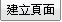。 |
| 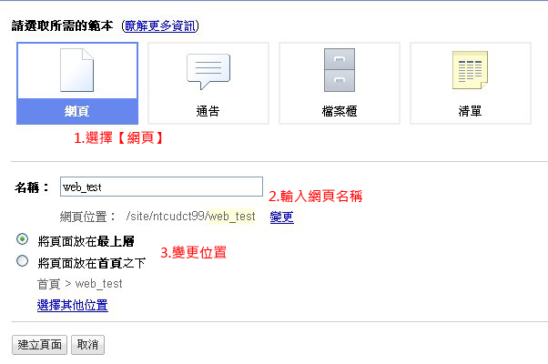 | |
2. |
可選取上方功能列進行編輯。 |
| 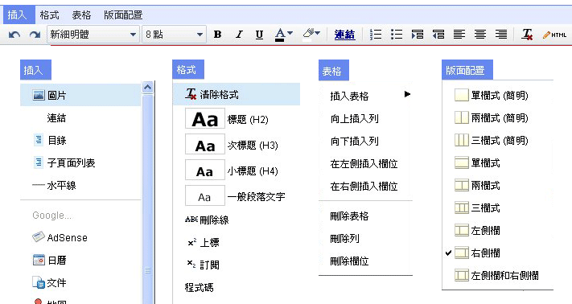 | |
3. |
編輯完後，在右上方按 進行儲存。 |
4. |
如需再進行編輯，選取右上方 |
5. |
如要刪除網頁，選取右上方 -> 【刪除頁面】。 |
| 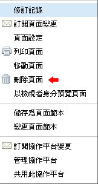 | |
6. |
再次確定是否刪除此頁面。按 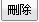 或 。 |
| 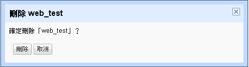 |
| 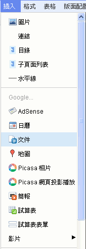 | |
| ■ 插入文件 ■ | |
| 1. | 插入-> 文件。選取Google上儲存的文件，按 。 |
| 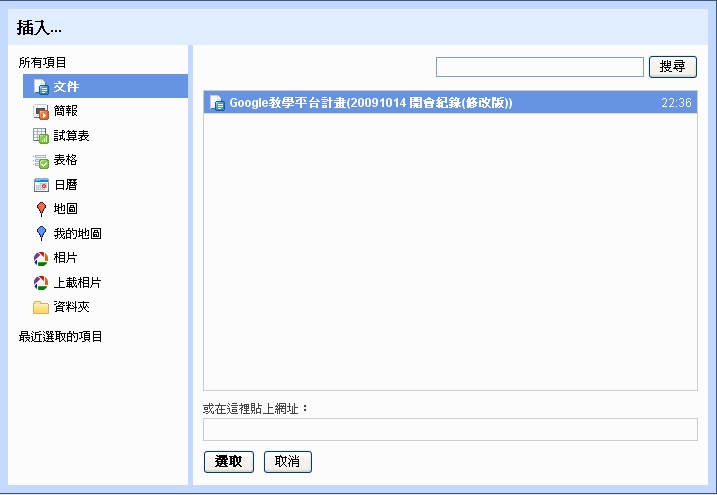 | |
2. |
進行相關編輯，按 。 |
| 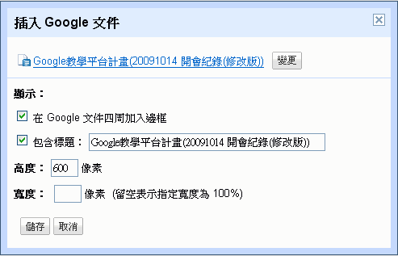 | |
3. |
畫面呈現。如需修改，按 。 |
| 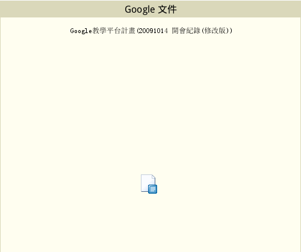 | |
| ■ 插入地圖 ■ | |
1. |
輸入地址後按 。 |
| 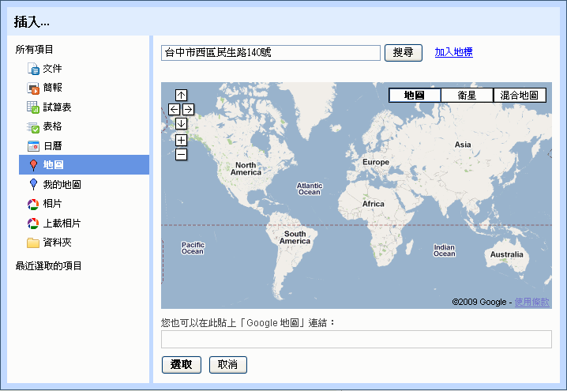 | |
2 |
GoogleMap出現後，按 。 |
| 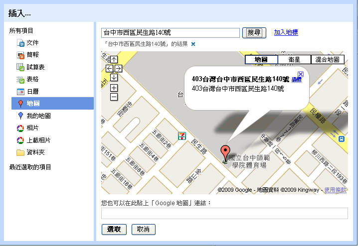 | |
3. |
畫面呈現。 |
| 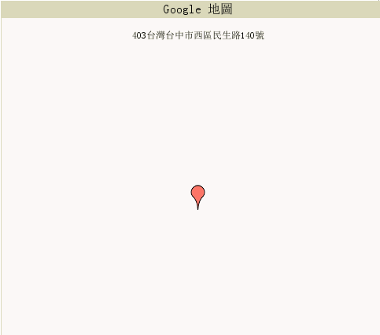 | |
| ■ 插入影片 ■ | |
1. |
選擇欲插入YouTube影片或是Google影片。 |
| 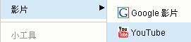 | |
2. |
輸入相關資訊（影片網址、標題），按 或 。 |
| 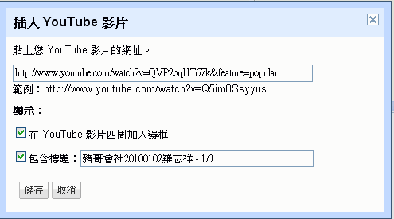 | |
3. |
畫面呈現。 |
| 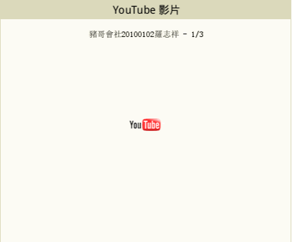 | |
| ■ 成果 ■ | |
| 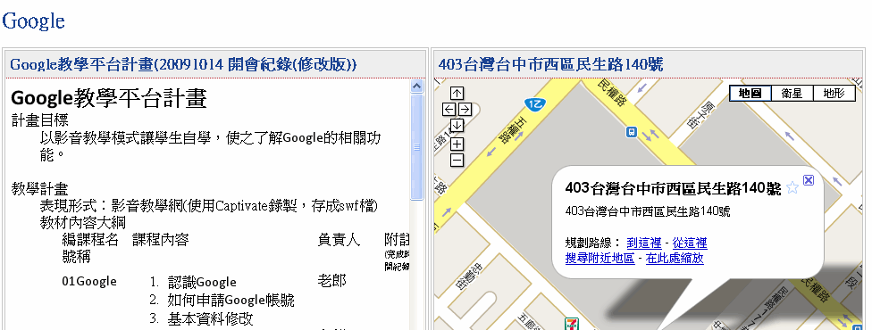 | |